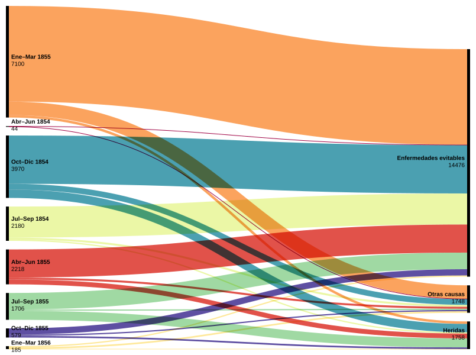
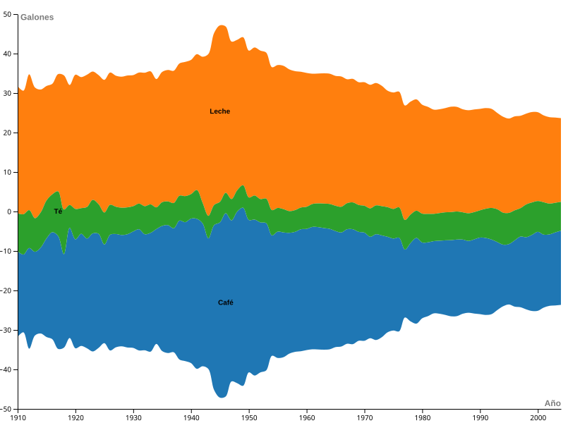

Infovis — Mariano Fernández
Ejercicios de clase del módulo 4 de Visualización de la información, ITBA.
¿De qué se murieron los soldados británicos en Crimea?

¿Qué tomaban los estadounidenses en el siglo XX?

¿Cuál fue el peor mes de la guerra?
¿En qué ingredientes de pizza no se ponen de acuerdo varones y mujeres?
¿Dónde y a cuánto se alquila en Buenos Aires?